|
CONSTRUCCIÓN DE CASETA INVERNAL PARA Geochelone pardalis
Santos Hernández, 2007
Bueno, como algunos saben, y a otros
mediante la presente comunico, un día de cuya fecha no quiero
acordarme aterrizaron en mi casita unas etíopes la mar de monas todas
ellas. Como era primavera, todo fue muy bonito hasta que la fuerza del
sentido común se impuso: tenia 280 kg de G. pardalis en un jardín
mediterráneo, con cierta tendencia continental, es decir, frecuentes
heladas en invierno.
Lo primero es decidir qué se necesita. En mi caso, se mendigó
información por todos los confines de este foro, se tiró de amigos y
algunos incluso dejaron de serlo, a partir de que me convertí en un
pesado.
La conclusión fue que necesitaba una caseta calefactada de unos 8 m2
(un metro por tortuga), que mantuviera bien como mínimo los 22º C de
mínima por la noche (de día sube fácil a 34ºC).
Lo primero fue limpiar el terreno para poder construir una caseta.
Como ya tenía una caseta de madera en el jardín para guardar juguetes
pues, lo más lógico, era ampliarla, de forma que quedara integrada en
la antigua.
Punto uno: sobornar a un amigo a base de refresco reconstituyente,
para cortar un árbol que estaba en un sitio inadecuado.
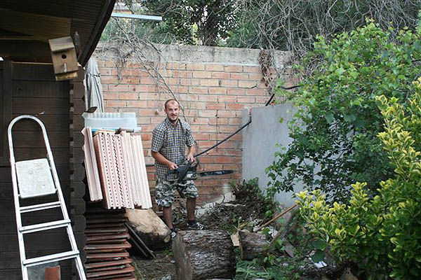
Segundo: reventar el techo de la caseta vieja colocando dos puntales y
dando vueltas hasta que se rompió todo, para que el techo mantuviera
una inclinación continua. De otra manera el tejado hubiera quedado con
diferentes pendientes, poco práctico, a la vez que cutre.
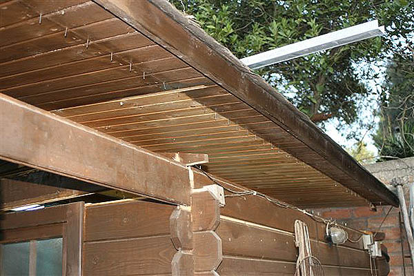
Luego se hizo un suelo alzado unos 40 cm. para que no hubiera humedad
y se empezaron a tomar medidas definitivas para poder comprar los
materiales de la totalidad de la caseta. El suelo va sobre viguetas de
madera y se construye de machihembrado de abeto noruego de la máxima
calidad, sin nudos y de una veta blanca preciosa. Craso error, lo han
dejado hecho una mierda, el barato hubiere ido, incluso mejor, porque
tiene agujeros y hubiesen servido de drenaje... De todo se aprende,
hasta de la mierda.
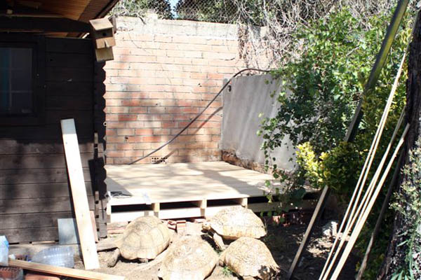
Luego de medir todo trescientas mil y pico veces, encargo todas las
maderas cortadas a medida, para currar lo menos posible. Como el tema
de la inmigración esta muy complicado, decido que lo mejor de lo mejor
para mis etíopes y lo pido todo en DM hidrófugo de 35mm, las viguetas
de 60x170mm, el aglomerado interior de 10mm y todo el machihembrado
del techo de la mejor calidad de abeto noruego. Del precio mejor no
hablamos pues me han dicho los moderadores que de sexo no se puede
hablar.
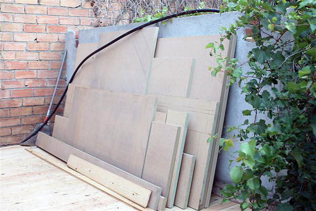
Nos ponemos al curro: se trata de forrar las paredes de obra con
paneles de 35mm de DM, recortar los paneles para hacer los encajes de
las viguetas de sujeción del techo y montar el techo de machihembrado,
con cuidado de quedar enrasado con el techo de la caseta vieja, total
para un chico de campo como yo pues un plis plas..............jejeje.
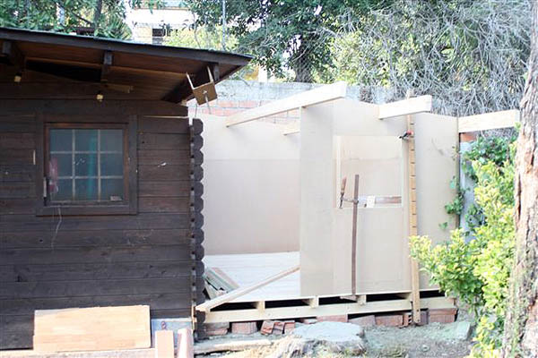
Bueno, aquí hay que añadir una ventanita que se me ocurrió en el
último momento. Total, como hago obras en casa y he sacado la ventana
del baño, para poner una con rotura térmica, pues aprovecho la vieja,
que es de madera y con cristal Climalit, para las etíopes, no sea que
me denuncien por trato discriminatorio. A veces mis ideas no son
buenas, pero ésta fue de lo más malo de las tres o cuatro últimas
temporadas.
Bueno, pues seguimos currando, y luego
de poner el techo, (no sabia que con tan pocos dedos me podía dar con
el martillo tantas veces), se calcula un marco de 1800x 900mm, que
sobresalga del techo lo suficiente para poder poner las planchas de
poliuretano expandido de 40mm, la tela asfáltica como
impermeabilizante y las losetas asfálticas como tejas de carácter más
decorativo. En este caso deje 70mm, para ir sobrado.
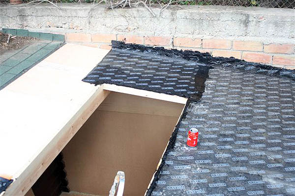
Otra vez a buscar a los colegas, que
servidor sabe de todo pero con un soplete en la mano se me pone una
cara de Nerón que da miedo. No se preocupen por la conocida lata de
refresco reconstituyente, es sponsor habitual de la casa.
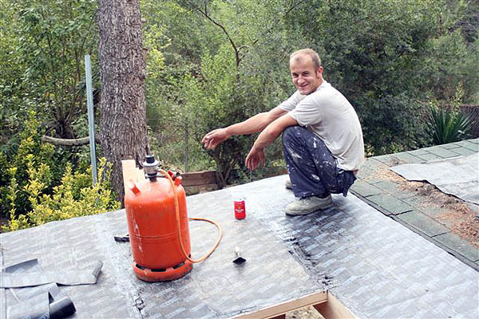
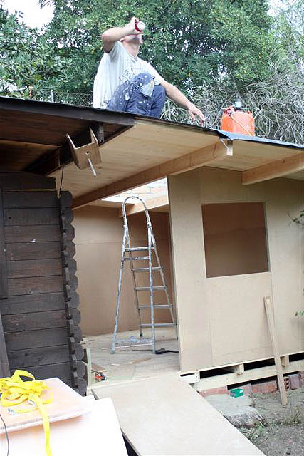
Luego se trata de buscar un cristal para el techo que resista en el
exterior y que deje pasar la frecuencia UVA, (siempre va bien que si
te viene una amistad en invierno tengas una salita a 30ºC para tomar
el sol, las amistades salen morenitas y muy agradecidas). Luego de
informarme largo y tendido resulta que el policarbonato que se utiliza
en las maquinas de rayos UVA es ideal y hacen un compuesto especial
para exteriores que es perfecto para el caso que nos ocupa. No
hablemos del precio pues me insisten que no se puede hablar de sexo,
pero jurar puedo que el precio es como si de eso mismo se tratara.
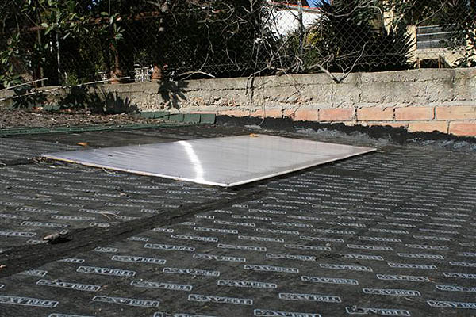
Mientras, nos buscamos la vida y nos montamos una rampita para acceso
de los inmigrantes a su nuevo habitáculo, y montamos la ventana con
mas pena que gloria, pero montada ha quedado y funciona de maravilla
(no se lo digan a nadie pero al final se hizo totalmente nueva, sólo
se aprovecho el manubrio, el cristal y las bisagras).
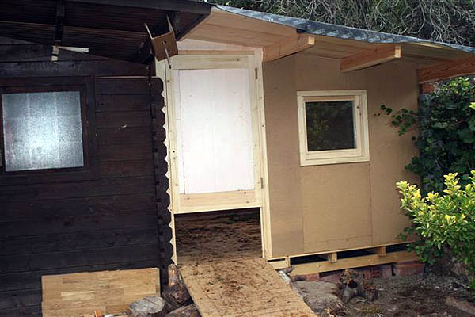
Para los que se fijan en los detalles, pues sí, sí que tuvimos que
retocar la rampa y hacer unos gravados para que subieran sin
dificultad. La verdad es que cuando se cagó la primera, no podía subir
ni yo mismo con zapatos normales.
Bueno, ahora empieza principalmente el tema de aislar la caseta de los
rigores del invierno, por lo que se forra toda entera por el interior,
exceptuando el techo, (que se puso por el exterior), con planchas de
poliuretano expandido de alta densidad de 40mm, y luego se vuelve a
revestir en la totalidad con aglomerado de 10 mm.La puerta es más
difícil pero también hay que hacerla.
Nota del currante: a) La idea de forrar a triple capa toda la caseta
es robada directamente de nuestro amigo "Terrestre", y b) La puerta
recortada es copia descarada de nuestro amigo "Testudos", lo siento,
tengo mucha facilidad para copiar las buenas ideas. Cuando nos veamos
el sponsor les gratificará con algo fresquito.
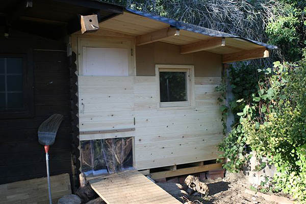
Bueno, como ya tenía todos los dedos vendados, podía aguantar con
facilidad un par de martillazos más, por lo que seguí clavando
machihembrados, esta vez, en todo el frontal de la caseta.
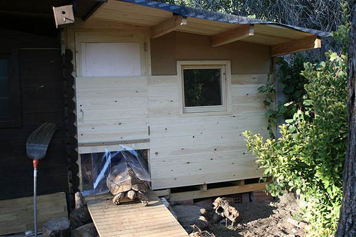
La cosa terminó con el interior tal y como se aprecia en la primera de
las dos fotos siguientes,
pero las niñas son muy suyas y no les gustaba lo suficiente el
hotelito y la cosa ha terminado como se aprecia en la segunda
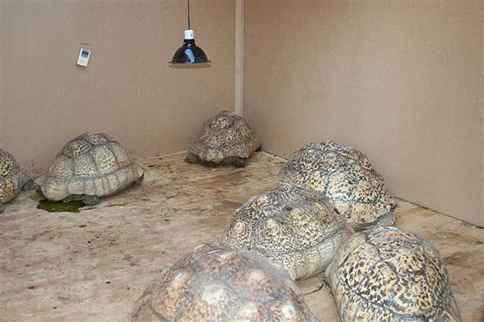
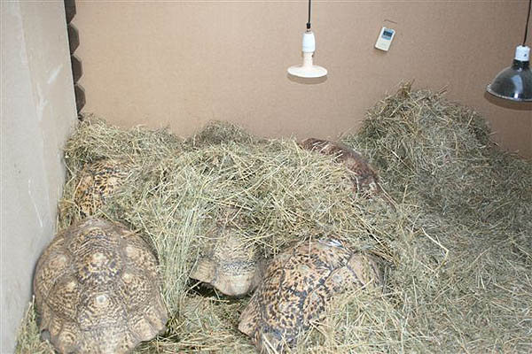
Luego de dar un par de capas de barniz de marca muy conocida, que no
citamos porque no nos sponsoriza, la caseta va cogiendo forma, pero
saco los plásticos de la puerta de acceso para que no les sea
laborioso el acceso y facilitar la adaptación a las instalaciones.
Mantener la caseta caliente sin puerta pues... es el tema ese que me
han prohibido los moderadores.
Finalmente, se han acostumbrado a entrar
y salir y, actualmente, les he vuelto a poner los plásticos de la
puerta, con lo que la caseta ha quedado tal y como adjunto las
siguientes fotos.
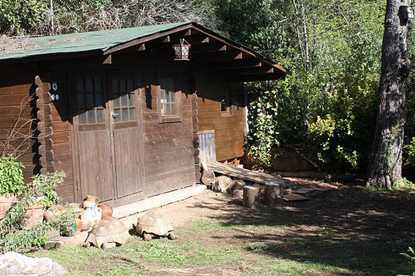
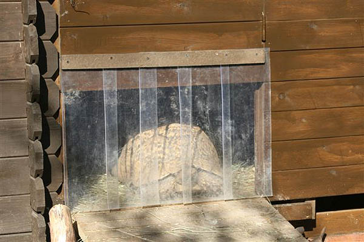
|